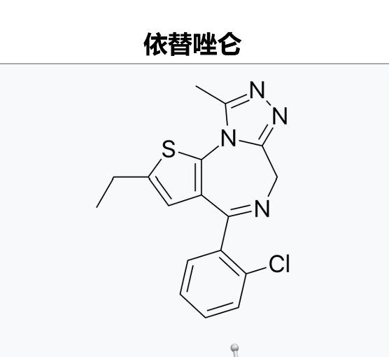
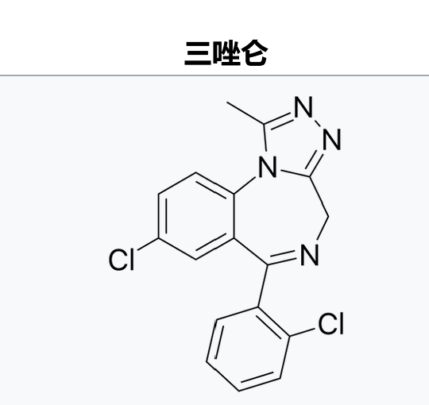
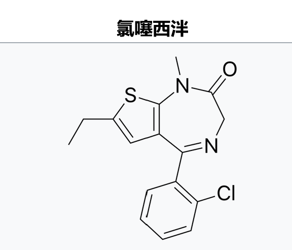

医用剂量:1mg
娱乐剂量:2mg-10mg
同其他苯二氮䓬类药物一样，依替唑仑的娱乐潜力因人而异。依替唑仑通过缓解焦虑制造欣快感，因此对于越受焦虑影响的人，它的娱乐潜力越大。
同其他苯二氮䓬类药物一样，依替唑仑可导致耐药，心理成瘾和生理依赖。戒断反应是异常焦虑性质的兴奋，严重者可癫痫或死亡。

娱乐剂量:2mg-10mg
同其他苯二氮䓬类药物一样，依替唑仑的娱乐潜力因人而异。依替唑仑通过缓解焦虑制造欣快感，因此对于越受焦虑影响的人，它的娱乐潜力越大。
同其他苯二氮䓬类药物一样，依替唑仑可导致耐药，心理成瘾和生理依赖。戒断反应是异常焦虑性质的兴奋，严重者可癫痫或死亡。



每日💊科普(day2)依替唑仑
依替唑仑属于镇定剂，尽管机理类似，它严格上不属于苯二氮䓬类药物。它是三唑仑的氯苯基被2-乙基噻吩基替换，或是氯噻西泮的唑仑版
它在日本被用于治疗失眠("安神片")，在其他地区属于策划药。药效5-7小时。服用者经常报告自己意识模糊，甚至不知道自己服了药，做出危险行为. https://t.co/7lrfkCnd1F
依替唑仑属于镇定剂，尽管机理类似，它严格上不属于苯二氮䓬类药物。它是三唑仑的氯苯基被2-乙基噻吩基替换，或是氯噻西泮的唑仑版
它在日本被用于治疗失眠("安神片")，在其他地区属于策划药。药效5-7小时。服用者经常报告自己意识模糊，甚至不知道自己服了药，做出危险行为. https://t.co/7lrfkCnd1F